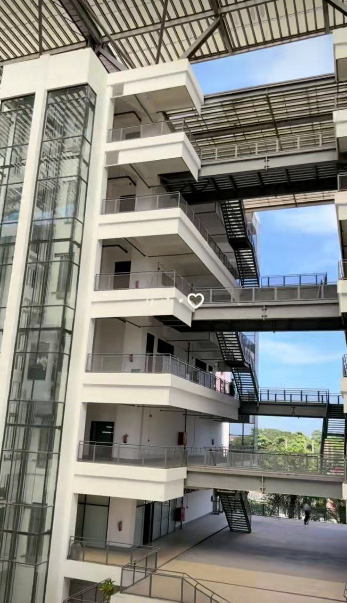
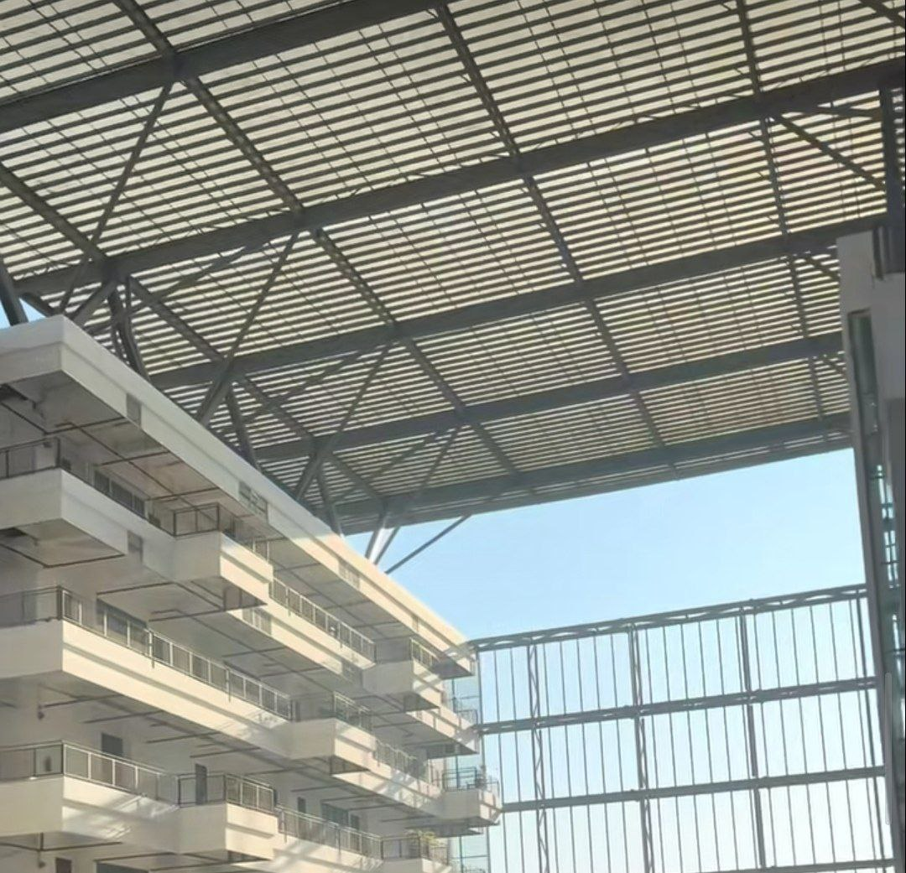

About the University
သတင်းအချက်အလက်နည်းပညာတက္ကသိုလ် (UIT) သည် ၂၀၁၂ ခုနှစ် ဒီဇင်ဘာ ၃ ရက်နေ့တွင် ICT ဆိုင်ရာ Center of Excellence အဖြစ် တည်ထောင်ခဲ့ပြီး ၂၀၁၅ ခုနှစ် ဧပြီ ၁ ရက်နေ့တွင် University of Information Technology (UIT) ဟု တရားဝင်အမည်ပြောင်းလဲခဲ့သည်။
UIT သည် မြန်မာနိုင်ငံ၏ ICT နယ်ပယ်တွင် အဓိကသုတေသနဗဟိုဌာနအဖြစ် ရပ်တည်ပြီး ဘွဲ့ကြိုမှ ဒေါက်တာအဆင့်အထိ ကျောင်းသားများကို ပညာသင်ကြားပေးနေသည်။ တစ်နှစ်လျှင် ဘွဲ့ကြိုကျောင်းသားပေါင်း ၂၀၀ ခန့် မြန်မာတစ်နိုင်ငံလုံးမှ ရွေးချယ်တင်မြောက်ကာ ခေတ်မီ ICT ပညာကို သင်ကြားပေးနေသည်။
ပညာသင်ကြားရေး ဘာသာရပ်များတွင် Software Engineering, Cyber Security, Embedded Systems, High-Performance Computing, Knowledge Engineering နှင့် Communication and Networking တို့ ပါဝင်သည်။ တက္ကသိုလ်၏ ရည်မှန်းချက်မှာ ICT နည်းပညာဖြင့် နိုင်ငံ့ဖွံ့ဖြိုးတိုးတက်ရေးကို ပံ့ပိုးကူညီရန် ဖြစ်သည်။
Why Choose UIT?
Center of Excellence in ICT
Established to develop high-level ICT professionals and specialists, UIT is Myanmar's nationally recognized institution for advanced IT education and research.
Industry-Relevant Specializations
Study Software Engineering, Cyber Security, Embedded Systems, Networking, and High Performance Computing — all aligned with real technology careers.
Research & Innovation Culture
UIT emphasizes ICT research that supports national development, with programs spanning undergraduate to doctoral levels.
Undergraduate to Ph.D. Pathway
Advance through Diploma, Bachelor's, Master's, and Doctoral study options within one focused, ICT-dedicated university.
Yangon Location — Hlaing Campus
Located on Parami Road, Hlaing Campus, close to Yangon's main academic zone with strong access to the tech industry.
Built for High-Impact Tech Careers
Graduate with skills for software development, cybersecurity, systems, and networks — backed by a curriculum designed for professional capability.
Campus Gallery

UIT Campus Main Building
Main Building

Campus LifeUndergraduate Programs (B.C.Sc.)
4–5 year Bachelor of Computer Science programs
Design, develop, and maintain large-scale software systems. Covers programming, algorithms, system design, testing, and project management.
Bridge technology and business — ERP systems, data analytics, IT management, and enterprise solutions for organizations.
AI, machine learning, expert systems, and knowledge representation. Prepares graduates for intelligent systems and data-driven roles.
Parallel computing, GPU programming, distributed systems, and scientific computing for high-demand processing environments.
Postgraduate Programs
Master's and Doctoral level — advanced ICT specializations
Research & Projects
ICT research initiatives and student projects at UIT
National Cybersecurity Research Initiative
Research into threat detection, network vulnerability assessment, and security policy frameworks aligned with Myanmar's national digital infrastructure goals.
High-Performance Computing Lab
Parallel processing research using cluster systems and GPU acceleration for data-intensive scientific and engineering computation tasks.
Myanmar Language NLP Systems
Knowledge engineering projects focusing on natural language processing tools for the Myanmar language — text recognition, translation, and speech interfaces.
IoT & Embedded Systems Development
Student-led projects building IoT devices, microcontroller-based systems, and embedded applications for smart agriculture and infrastructure monitoring.
Industry Collaboration Programs
Partnerships with Yangon-based tech companies, banks, and telecoms for internship pipelines, final-year projects, and joint research programs.
Campus Life
Life at UIT's Hlaing Campus, Parami Road, Yangon
Computer Labs
Modern ICT laboratories equipped for software development, networking, HPC experiments, and cybersecurity research training.
Digital Library & LMS
Access to academic resources through UIT's official LMS (Moodle-based) and a physical library with ICT-focused collections.
Student Communities
Active student networks via Facebook groups, batch chats, and department communities connecting current students and alumni.
Hackathons & Competitions
UIT students regularly participate in coding contests, hackathons, and ICT innovation competitions both locally and regionally.
Research Environment
A research-first culture where students at all levels engage with faculty on ICT projects contributing to national tech development.
Industry Exposure
Regular industry visits, guest lectures from tech professionals, and internship placements at Yangon's leading ICT companies.
Career Paths
Where UIT graduates work and what they build
Software Engineer / Developer
Web, mobile, and enterprise software development at tech companies, banks, telecoms, and startups across Yangon and beyond.
Cybersecurity Specialist
Network security, penetration testing, and security operations in government agencies, banks, and enterprise IT departments.
Network / Systems Engineer
Infrastructure design, server management, cloud platforms, and network operations for enterprise and government systems.
AI / Data Science Roles
Machine learning engineering, data analytics, and intelligent systems development in research institutions and private tech firms.
Teaching & Research
Postgraduate graduates pursue lecturing at technical institutes, doctoral research, and ICT training center roles nationwide.
Alumni Network
UIT is a young university with a fast-growing, hands-on alumni community
UIT is relatively young compared to UCSY, so its public notable alumni list is still developing — but graduates are building strong careers across Myanmar's ICT sector.